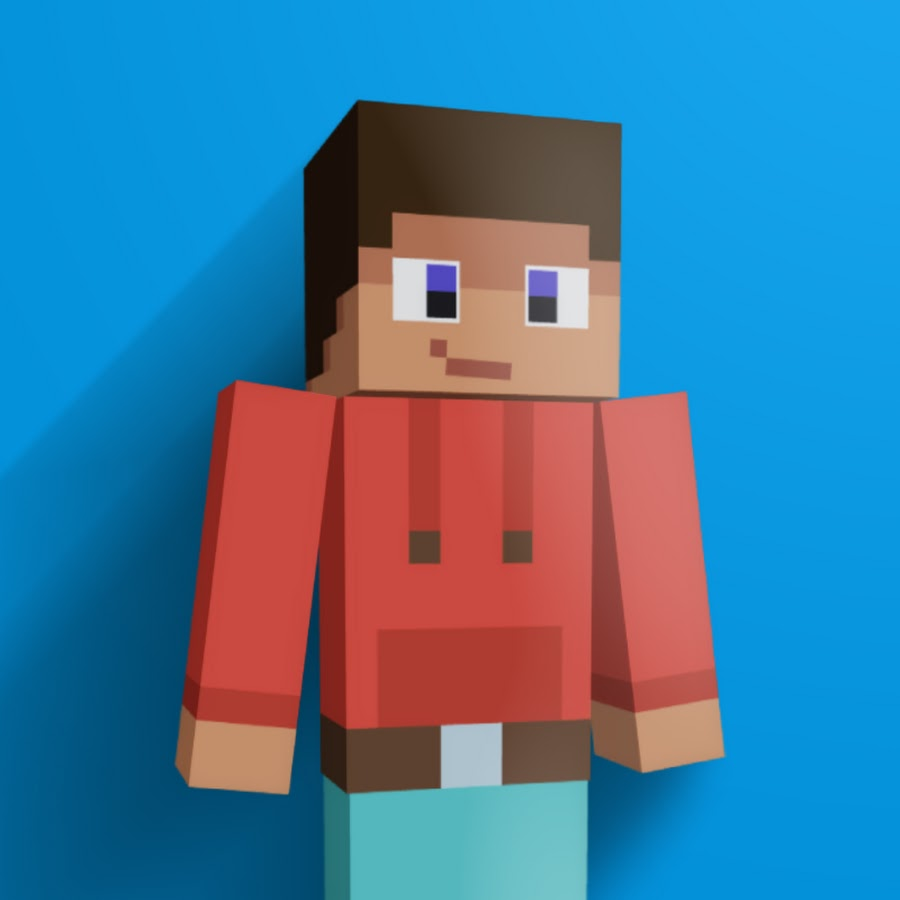
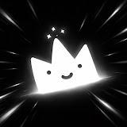
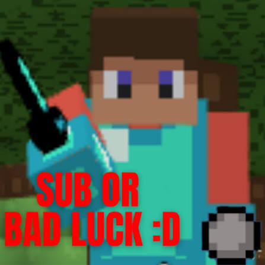
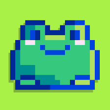
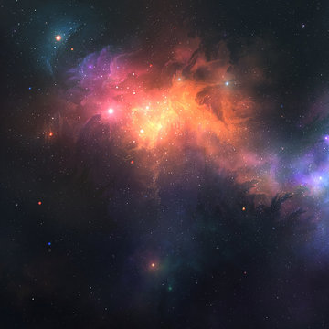
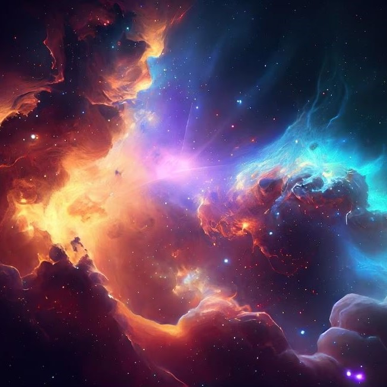

C_Bloxd
Awards JudgeA content creator and artist with +1.4k subscribers which created and directs this event.
The Bloxd Awards 2026 are just around the corner, and we're looking for potential nominees across all award categories! Help us recognize the creators who have made an impact on the Bloxd community. Click the button below to suggest candidates for each category!
Bloxd Awards is a project looking to award and recognize some of the best content creators, artists, projects and contributors that the Bloxd community has. The event will feature a wide variety of award categories covering content creation, art, game development, events, and much more.
Each category will have four nominees selected through community participation, followed by an evaluation process in which a panel of judges will determine who deserves each award the most.
More than just a competition, the Bloxd Awards aims to bring the community together, highlight its incredible talent, and give recognition to those who have made a meaningful impact. The project will culminate in a special livestream awards ceremony with appearances from some of the most notable members of the community.
Ultimately, the goal is to create a memorable event that celebrates the people and achievements that make Bloxd what it is, while hopefully establishing a tradition the community can look forward to every year.
Sixteen categories celebrating the creators, artists and projects that make the Bloxd community what it is.
Meet the people responsible for evaluating nominees and deciding the winners of the Bloxd Awards 2026.

A content creator and artist with +1.4k subscribers which created and directs this event.

A recognized developer and artist known for the creation of Bloxdhub.

An OG Bloxd content creator with +25k subscribers.
An animator and ex Bloxd creator with +10k subscribers

A recognized editor and content creator from the Bloxd community.
Meet the people working behind the scenes to bring the Bloxd Awards 2026 to life.
Director and creator of the event.

Redbull coder fucking genuis.

Chill Guy. W